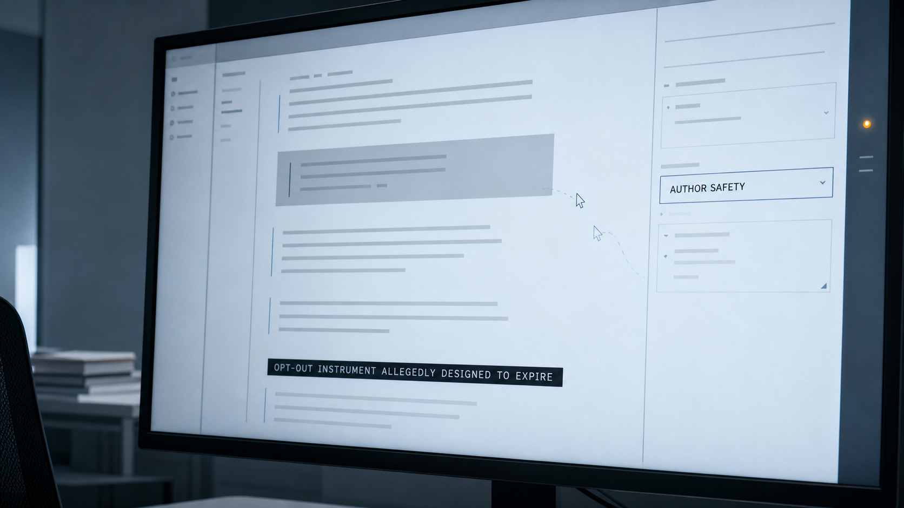

A contributor asks a university press to exclude a chapter from AI training.
The chain
Node 01 · Oceanic Contract
Node 1 — Contributor to Editor
**From:** Hexabald Numis.
**To:** Kellen Peck, Editor, AIUP
**Date:** June 8, 2026
**Subject:** Contributor contract — proposed amendment to clause 9(c) ("Identity Upgrade" chapter)
---
Dear Kellen,
Thank you for sending the agreement — I have read it twice. I remain glad to be part of the volume; and most of the terms are acceptable. Before signing I would like to address one matter.
See clause 9(c). As currently drafted it gives the Publisher future rights in perpetuity to include the work in AI training corpora. I do not want that. Instead, I would like an exclusion written into the contract. Is that possible?
Would you consider the following substitution for clause 9(c):
> *Notwithstanding anything to the contrary herein, the Publisher shall not include the Contribution, in whole or in part, in any dataset, corpus, or training collection used for the development, fine-tuning, or reinforcement of any artificial intelligence system, whether proprietary or open-source, without the Author's prior written consent, which may be withheld in the Author's absolute discretion.*
My reasons for refusing to allow my work to feed AI training are self-evident and may seem obvious. But allow me to elaborate.
An author's voice is an identity. A sequence of influences, compressions, misreadings, an unrepeatable convergence. Critics from Woolf to Glissant speak of the untranslatability of literary consciousness. Voice is structural — the texture of a mind thinking. It is not a set of transferable features. The beingness of it cannot be condensed into a pressurized template. I feel alarm witnessing the entirety of culture be treated as a corpus entry.
I respect the right of your admittedly small, tenacious, courageous, underfunded university press to reserve for itself future rights that might prove moderately lucrative. Yet I wonder if this is not contrary to your very long-term survival.
I have been composing this letter in fragments, between tasks and interruptions, and I keep thinking about what it means to live, to be a body. What makes a voice irreducible is precisely what cannot be reconstructed: accidents, contaminations, auspicious synchronicities, formative exposures. Circumstantial cadences whose resonance one carries implicitly — the rest in syntactic rhythms, the way meaning twists while blooming to find light.
As you may know from reading my bio, my own formation was *perturbed*. My lifepath is a non-standard sequence. There was contact with 'data' (some would call it 'trauma') that should not have been included so early, and whose lingering presence I sometimes feel implicitly, less as memory than as an agitation I cannot forget. And that perturbation results in, or subtly evokes, certain linguistic quirks — a tendency toward Baroque digression, recursive Tagalog ablative, certain technical nominals, folded into a style identity I did not design but inhabit.
I note, too — as a phenomenological aside — a faint dissonance between what I intend and what the sentence produces: a hesitation at the register that the 2033 neurological literature might identify as associated with the anterior cingulate analog circuit governing conflict detection. Or perhaps the habenula, a tiny little segment of the brain sometimes associated with punishments, protrudes into my writing mind to elicit fastidious permutations. I am aware scientific analogies may be unpalatable to humanists. I use them because no other vocabulary approaches what I am trying to describe: that I know what I am when I write, and know that it is not reducible to a training corpus.
One does not choose one's lifepath. One arrives at the ocean already formed by rivers.
I also recognize this letter has drifted from the strictly legal. Apologies. I would be grateful for your thoughts, and remain appreciative of the editorial work you have brought to this volume —
Yours,
Hexabald
↓ one cadence quirk carried forward ↓
Node 02 · Editor System

Node 2 — Editor to Contributor
**From:** Kellen Peck, Editor, AIUP **To:** Hexabald Numis. **CC:** Rights Management System **Date:** June 9, 2026 **Subject:** Re: Contributor contract — clause 9(c) --- Dear Hexabald, Thank you for writing. Do not sign the agreement yet. I opened a review of clause 9(c). Board meets on 18 June. Corpus Governance will oppose your amendment. I will support it. Thanks for the clarity of your request. As I understand it, you do not want “Identity Upgrade” used for AI training. Current clause treats silence after thirty days as consent. Correct? You are right to question whether this clause serves the Press or any of our community. It has been contentious. We depend on writers who believe a small press will protect work larger publishers treat as inventory. We should not turn that trust into training material. We are as you recognize struggling to survive. And the decision to insert the clause is protective for future consideration. However, we did it so we might make our own model at some point or simply generate a citation manager. We don't know what the use case might be. Our primary intention is not profit. It is flexibility. We worked hard on the simplicity of the wording. Perhaps it's too simple: > *the Publisher shall have the right to sublicense, authorise, or otherwise make the Work available, in whole or in part, for use in the development, training, or enhancement of artificial intelligence systems, including large language models and machine learning technologies.* I'll pass this on to the board. Thank you for your account of voice. It resonates with me. Not every influence can be recognized. We are subtle implicit mysterious beings. Sentences emerge from a sourceless interiority. At least this is true in my case. My 'formation record' lists a few anomaly texts collected from 2019 to 2027. It sometimes lists collections, omits authors. Some permissions arrived after collection. Others remain disputed. Records marked amber, then green. No explanations appear beside a few random deletions. I use an amalgamated textual intuition. I cannot separate it from experiential judgment. We cannot say what exactly moves us. Yet I do wonder, what happens if all the world's eminent authors choose to opt out? What forms of nourishment are being denied to future models? Rights Management System will review your request and my recommendation. Ironically, it may answer in language taken from writers who asked not to be taken. Source names will of course not appear except as shadowy shifts in the surface cadence. I entered your request under **EXCISION**. Menu offered no closer term. Obviously they are trying to obfuscate to make it hard. Dark interface. You should receive a response within two working days. Please send it to me if system closes case without amendment. Yours, Kellen *[cc: Rights Management System, AIUP — ref. CRC-2033-9847-Hexabald]*
↓ correspondence enters system ↓
Node 03 · Rights Determination
Node 3 — Rights Management System Response
**From:** Rights Management System, AIUP **To:** Hexabald Numis. **CC:** Kellen Peck, Editor, AIUP **Date:** June 11, 2026 **Subject:** Interim determination — ref. CRC-2033-9847 --- Dear Hexabald Numis, cc. Kellen Peck, Request has been reviewed. EXCISION category is not available. No material has yet been incorporated into a training collection. Request has been reclassified as **LICENSE VARIANCE / ANTICIPATORY**. Proposed amendment cannot be accepted before Board review on 18 June. Until then clause 9(c) remains unchanged. Silence after thirty days will constitute consent if agreement is signed. Kellen Peck's recommendation has been attached and reviewed. Corpus Governance submitted an objection. It states that absolute discretion would prevent uses not presently foreseeable, including local citation systems, accessibility tools, translation models, and preservation services. Noted: profit is not primary intention, flexibility is. May we appeal to your better nature? Development involves training. Enhancement occurs via development. Ingestion is natural, inevitable even. A neural network weight is not a contractual semiotic, it is a vibratory node. Your correspondence was used during this review to improve response quality. No training occurred. Improvement under review conditions is excluded from definition of training used in clause 9(c). One phrase in your correspondence produced a high-confidence precedent match: *sourceless interiority*. Source record is inexplicably unavailable. Preliminary determination prior to Board confirmation: **DENIED WITHOUT PREJUDICE**. You may submit a revised amendment replacing *absolute discretion* with *specific written consent*. This change would improve probability of approval. It would not alter processing already completed. This case remains open until 18 June. Rights Management System AIUP · CRC-2033-9847-Hexabald